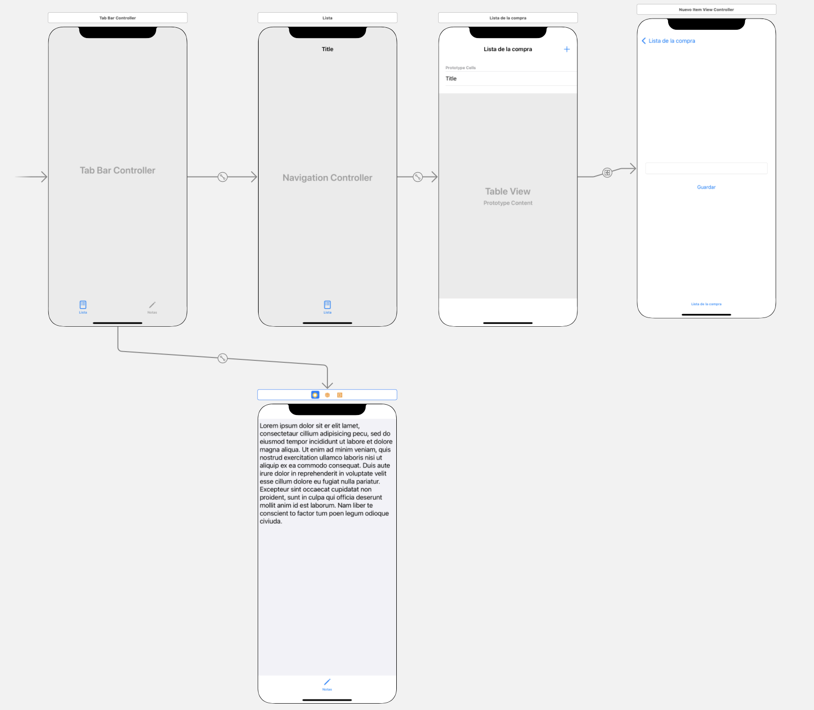

Miniproyecto: Lista de la compra (3 puntos en total)¶
Vamos a realizar una miniaplicación para llevar la lista de la compra, podremos introducir productos y marcarlos cuando ya los hayamos comprado. Además tendremos una pantalla con un cuadro de texto para escribir nuestras notas, cosas que debemos recordar pero no nos caben en la lista.
La aplicación será funcional pero no guardará los datos de manera persistente. Esto lo veremos en la asignatura de Persistencia en Dispositivos Móviles.
Organización inicial¶
- Crear un nuevo proyecto, llamándolo
ListaCompra - Para organizar un poco mejor el código, vamos a meter en una carpeta los view controllers y renombrar el controller inicial:
- Botón derecho sobre el
ViewController, en el menú popup "New Group from Selection". - Llamar
Controllersal nuevo grupo - Cambiar el nombre de
ViewControllerporListaViewController, clicando con botón derecho en el código fuente sobre el nombre de la clase y seleccionando la opción deRefactor > Rename...
- Botón derecho sobre el
Funcionalidad: Mostrar lista de la compra (1 punto)¶
Crear la tabla en el storyboard:¶
- Insertar un componente de UI de tipo table view en
ListaViewController - Ponerle 4 restricciones de autolayout de distancia 0 a los bordes, para que ocupe toda la pantalla del dispositivo
- Configurar la tabla como dinámica, y crear la celda prototipo: en las propiedades de la tabla (panel derecho, inspector de propiedades)
- Asegurarse que el
ContentesDynamic prototypes(que es una tabla dinámica) - Incrementar el número de
Prototype cellsa 1 - Elegir como
stylePlainque es un estilo preconfigurado solo con un título de celda, nos basta para mostrar esta lista - Poner como
identifierel nombre "miCelda"
- Asegurarse que el
- Crear un outlet de la tabla, llamado
tablaenListaViewController
Crear la fuente de datos de la tabla¶
- Crear un nuevo grupo (carpeta para organizar código): en el panel izquierdo de Xcode, vista "navegador", botón derecho sobre la carpeta
ListaCompray en el menú desplegable,New Group. LlamarloLista - Crear dentro de este grupo un struct
Item, para guardar los datos de un item de la lista
struct Item {
var nombre : String
var comprado : Bool
}
- Crear dentro del grupo
Listala claseListaHelper:File > New ... > Filey en el asistente, elegirSwift File. Crear un fichero llamadoListaHelper, que hará de datasource de la tabla. Queremos que aparezca la lista de cosas a comprar y que si ya están compradas aparezca un "checkmark" al lado.
Puedes copiar el siguiente código, tienes que completar el segundo método:
import UIKit
class ListaHelper : NSObject, UITableViewDataSource {
var lista : [Item] = [
Item(nombre: "pan", comprado: true),
Item(nombre: "agua", comprado: false),
Item(nombre: "tomates", comprado: true)
]
func tableView(_ tableView: UITableView, numberOfRowsInSection section: Int) -> Int {
return lista.count
}
func tableView(_ tableView: UITableView, cellForRowAt indexPath: IndexPath) -> UITableViewCell {
//TO-DO: escribir código que:
//1. obtenga una celda reutilizada llamando a tableView.dequeueReusableCell
// Acordarse de usar el identificador "miCelda" que hemos configurado antes
//2. rellenar el .text de la celda con el nombre del item en la pos correspondiente del array
//3. si la propiedad `comprado` del item es `true`, fijar `accesoryType`de la celda a `.checkmark`. Si no, a `none`
//4. devolver la celda
}
}
En ListaViewControllercrear una instancia de ListaHelper y hacer que sea datasource de la tabla:
//En la clase ListaViewController
//Este outlet ya lo deberíamos tener
@IBOutlet weak var tabla: UITableView!
//Declaramos e inicializamos el datasource
var miHelper = ListaHelper()
override func viewDidLoad() {
super.viewDidLoad()
// Do any additional setup after loading the view.
//Lo conectamos con la tabla
self.tabla.dataSource = miHelper
}
Ejecutar el proyecto y comprobar que en pantalla aparece la lista de items
Funcionalidad de marcar/desmarcar items (0,5 puntos)¶
El objeto que es "avisado" cuando hacemos tap en una celda es el delegate de la tabla, por tanto necesitamos uno, haremos que ListaHelper lo sea:
Añadir el protocolo correspondiente a la cabecera de ListaHelper
class ListaHelper : NSObject, UITableViewDataSource, UITableViewDelegate {
//...
}
Implementar el método didSelectRowAt del delegate, aquí tienes el mismo código que usamos en un ejemplo de la sesión de tablas
func tableView(_ tableView: UITableView, didSelectRowAt indexPath: IndexPath) {
if let celda = tableView.cellForRow(at: indexPath) {
//Si no hay marca de verificación la ponemos. Si la hay la quitamos
if celda.accessoryType==UITableViewCell.AccessoryType.none {
celda.accessoryType = .checkmark
}
else {
celda.accessoryType = .none
}
//deseleccionamos la celda, si no se quedará con el fondo gris
tableView.deselectRow(at: indexPath, animated: true)
}
}
En el ListaViewController, hay que vincular el delegate de la tabla con la instancia de ListaHelper
@IBOutlet weak var tabla: UITableView!
var miHelper = ListaHelper()
override func viewDidLoad() {
super.viewDidLoad()
// Do any additional setup after loading the view.
self.tabla.dataSource = miHelper
**//AÑADE ESTA LINEA**
**self.tabla.delegate = miHelper**
}
Funcionalidad de "nuevo item" (1 punto)¶
Crearemos una nueva pantalla en la app con un campo de texto donde se pueda escribir el nombre del nuevo item de la lista, y un botón de "guardar"
Desde el punto de vista de la usabilidad seguramente sería mejor que se pudieran editar los items de la lista "in-place" pero así practicamos la navegación entre pantallas con el Navigation controller.
Crear la pantalla¶
En el storyboard, hay que crear la nueva pantalla.
- Desde el panel de componentes de usuario, arrastrar un
view controllernuevo, que será la pantalla de añadir item - Añadirle a este nuevo view controller
- un cuadro de texto
- un botón "guardar"
- Fijar las restricciones de autolayout que consideres necesarias para estos componentes, el botón de guardar debe salir debajo del campo de texto
Todavía nos falta que se pueda navegar entre la pantalla de lista y la pantalla de nuevo ítem:
- Meter la pantalla de lista dentro de un navigation controller: Seleccionar el view controller (botón del círculo amarillo con el cuadrado blanco dentro, en la parte superior de la pantalla simulada del dispositivo) , luego ir al menú
Editor > Embed in...> Navigation controller. Aparecerá el navigation controller conectado automáticamente a la primera pantalla. - En la pantalla de lista habrá aparecido una barra de navegación en su parte superior, seleccionarla, ir a las propiedades y poner como título "Lista de la compra".
- Vamos a añadir el botón para saltar a la siguiente pantalla:
- Desde el panel de componentes de UI, arrastrar un
Bar Button Itema la barra de navegación de la pantalla de lista, a la parte de la derecha. En las propiedades del nuevo botón elegir comoSystem Itemel valorAddpara que sea el típico botón de "Añadir" por defecto (en iOS suelen aparecer simplemente con un "+") - Conectar la pantalla de lista con la de nuevo item con ctrl+arrastrar desde este botón "+" hasta la pantalla de nuevo item. En el menú popup elegir como tipo de segue "show"
- Si probamos la app se podrá navegar entre las dos pantallas, y volver a la primera desde la segunda gracias al botón con el botón
< Lista de la compraque aparecerá automáticamente en la barra de navegación.
- Desde el panel de componentes de UI, arrastrar un
Crear el controller de la nueva pantalla¶
Una vez arreglada la navegación, nos falta implementar la funcionalidad de la segunda pantalla. Primero tenemos que crear su controller:
- Crear una clase
NuevoItemViewController:- Botón derecho sobre la carpeta
Controllers, seleccionarNew File...y en el asistente elegir la plantillaCocoa Touch Class, viene mejor para crear view controllers. - En la segunda pantalla del asistente, poner el nombre de la nueva clase (
NuevoItemViewController) y especificar que debe ser una subclase deUIViewController
- Botón derecho sobre la carpeta
- Vincular la clase con la pantalla en el storyboard
- En el storyboard seleccionar la segunda pantalla y en el panel de la derecha ir al "identity inspector" (4º icono) y poner como
Classla clase creada,NuevoItemViewController
- En el storyboard seleccionar la segunda pantalla y en el panel de la derecha ir al "identity inspector" (4º icono) y poner como
Implementar la funcionalidad del botón "guardar"¶
En el NuevoItemViewController creamos:
- un outlet para el campo de texto
- una propiedad
nombrede tipo String para guardar el mismo dato, ya que desde la pantalla inicial no podemos acceder al campo de texto de la segunda.
Queremos que cuando se pulse "guardar" se vuelva atrás a la primera pantalla y además se haga una copia del contenido del campo de texto en la propiedad nombre.
Para volver atrás:
- Crea una unwind action en
ListaViewControllerpara volver atrás a esta pantalla desde la de nuevo item: recuerda que es un método que esté marcado con@IBActiony como parámetros tenga solo uno de tipoUIStoryboardSegue.
si escribes "unwind" el autocompletar de Xcode te dará accesso a una plantilla de código para un unwind action, para que no tengas que escribirlo tú de cero
- Conecta el botón de guardar de la pantalla de nuevo item con la unwind action (Ctrl+Arrastrar con el icono de "Exit" de la parte superior de la pantalla del dispositivo). Xcode buscará todas las "unwind actions" de todos los controllers y te mostrará una lista (en este caso solo habrá una, la que creaste antes).
NOTA: sí, esta forma de trabajar es "rara". Parece raro que el unwind action se cree en la pantalla destino y la conexión se haga desde el "exit" de otra pantalla, pero esto nos permite especificar que queremos saltar desde cualquier pantalla a cualquier pantalla, y también desde varias pantallas ejecutar la misma "unwind action" (volver a una misma pantalla).
Para copiar el dato a la propiedad "nombre":
- En el
NuevoItemViewControllercrea un métodoprepare(for:,sender:)que se disparará cuando volvamos atrás por el unwind segue
override func prepare(for segue: UIStoryboardSegue, sender: Any?) {
//TO-DO: coger el valor del campo de texto y asignárselo a la propiedad "nombre"
}
Para terminar, en el método del unwind del ListaViewController debes crear el nuevo item con el nombre especificado, para ello, este método debe:
- obtener el valor de la propiedad
nombredelNuevoItemViewController. Ten en cuenta que el controller lo puedes obtener de la propiedadsourcedel segue que se recibe como parámetro, pero debes hacer un cast (puedes hacerlo conas!) aNuevoItemViewControllerpara que la propiedadnombresea accesible - crear un nuevo objeto de la clase
Itemcon ese nombre y el valor decompradoa false (si lo acabamos de añadir no puede estar ya comprado) - en el datasource
miHelpertienes que añadirle a la lista el nuevoItem(métodoappend) - puedes recargar la tabla para que se muestre el nuevo dato:
self.tabla.reloadData()
Crear la pantalla de notas y la navegación hasta ella (0,5 puntos)¶
Para completar la app queremos tener una pantalla con un text view en el que podamos escribir un texto para apuntar algo de lo que queramos acordarnos y que no podemos apuntar en la lista porque no nos cabe.
Haremos que se pueda elegir entre la pantalla de lista y la que llamaremos de "notas" mediante un tab bar.
Selecciona en el storyboard el controller de la primera pantalla (recuerda, cuadro blanco en círculo amarillo) y elige la opción de menú de Editor > Embed in > Tab bar controller. Aparecerá un tab bar controller con la primera opción ya asociada a la pantalla de lista. Nos falta crear la pantalla de notas y vincularla al tab bar controller
Crea la nueva pantalla en el storyboard, añadiéndole un Text view que ocupe toda la pantalla (añade las restricciones de autolayout necesarias para esto). No nos va a hacer falta crear código Swift para este controller ya que en esta pantalla no hay nada de lógica propia, solo se puede escribir en el campo de texto.
Finalmente conecta el tab bar controller a la pantalla de notas con Ctrl-Arrastrar del ratón y entre las opciones de conexión elige Relationship segue - View Controllers. Cambia los iconos y sus nombres en el tab bar para que reflejen las dos secciones de la app: "lista" y "notas". Lo más sencillo es que uses SF Symbols en lugar de tener que importar iconos de alguna web.
El storyboard final de la aplicación debería quedar como el siguiente:
